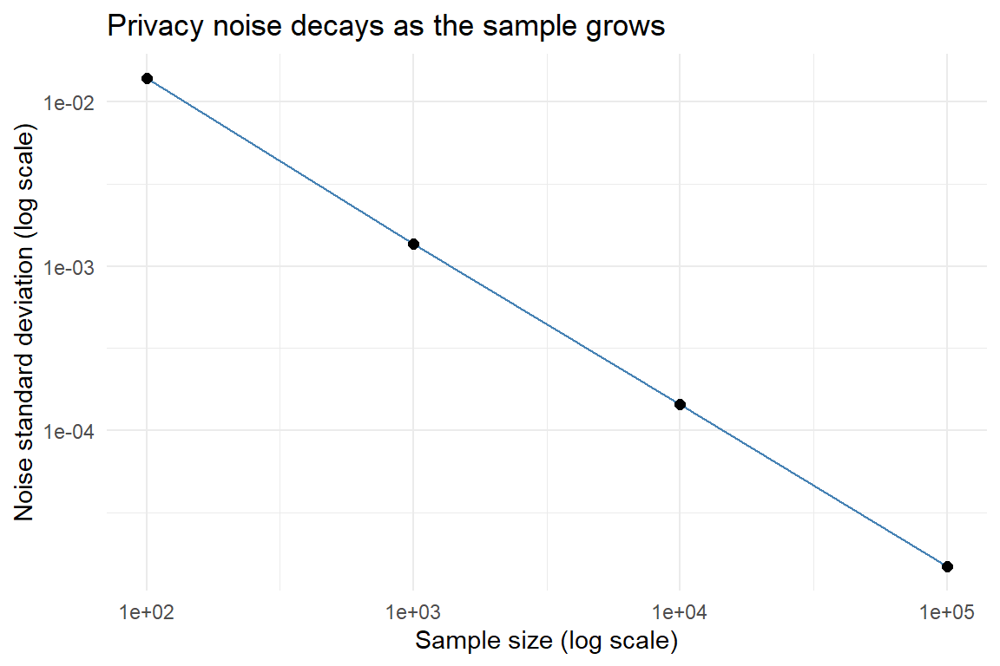

Chapter 56 Differential Privacy
Abstract. Anonymization by stripping identifiers fails against an adversary holding side information, and the history of re-identification attacks shows that this failure is routine rather than exotic. Differential privacy abandons the attempt to anonymize a dataset and instead makes a formal guarantee about the algorithm that touches it: the output distribution must be nearly unchanged when any single record is added or removed. This chapter develops that definition, the reading of epsilon as a bound on privacy loss, and the composition rules that govern what happens when one dataset is queried many times. It then covers sensitivity and the standard mechanisms built on it, including the Laplace and Gaussian mechanisms, the exponential mechanism for non-numeric outputs, and randomized response as the canonical example of the local model. A runnable simulation exhibits the privacy and accuracy tradeoff directly. The chapter closes on differentially private inference and estimation, where noise added for privacy becomes a component of the reported standard error, and on the systems now deploying these guarantees at scale.
Keywords: Differential privacy; Privacy loss; Laplace mechanism; Randomized response; Composition; Statistical disclosure control
The previous chapter on Replication and Synthetic Data confronted a recurring tension in empirical work: researchers and institutions want to share data so that findings can be verified and extended, yet the underlying records often describe identifiable people whose privacy must be protected. Synthetic data is one response to that tension. Differential privacy is another, more formal one. Where synthetic data tries to reproduce the statistical structure of a dataset through a generative model, differential privacy supplies a mathematical guarantee about how much any single person’s record can influence what an analyst sees. This chapter develops that guarantee, the mechanisms that achieve it, and what it means for statistical inference.
The motivation is best understood as a problem of data corruption in reverse. Much of this book treats noise, missing values, and measurement error as nuisances that degrade our estimates, and we ask how to recover the signal despite them. Differential privacy turns the question around. We deliberately inject noise into a release, and we ask how to learn about the population while guaranteeing that the noise is large enough to hide each individual. The same statistical tools that describe errors-in-variables and measurement error, discussed in the chapters on regression diagnostics and causal inference with imperfect data, reappear here, but now the corruption is a feature rather than a flaw.
56.1 Why Privacy Is Hard
A first instinct is to remove names, addresses, and identification numbers from a dataset before sharing it. This practice, called de-identification or anonymization, is widely used and widely inadequate. The difficulty is that almost any combination of seemingly innocuous attributes can act as a fingerprint when linked against external information.
The canonical demonstration is the re-identification of supposedly anonymous records using auxiliary data. Sweeney (2002) showed that a large fraction of the United States population is uniquely identified by the combination of five-digit ZIP code, date of birth, and sex, so a medical release stripped of names can still be matched to a voter registration list to recover identities. The same logic scales to high-dimensional data. Narayanan and Shmatikov (2008) de-anonymized a public dataset of movie ratings by linking it to a small number of publicly posted ratings, recovering individual subscribers from records that contained no obvious identifiers at all.
These attacks share a structure. The data holder cannot know in advance what auxiliary information an adversary possesses, so any release that is safe against today’s side information may be unsafe against tomorrow’s. This is the linkage problem, and it defeats two natural defenses. De-identification fails because the remaining attributes are themselves identifying. Restricting analysts to aggregate queries, such as group averages, fails because a sequence of overlapping aggregates can be differenced to isolate one person, and because small groups leak directly.
Differential privacy was designed to escape this arms race. Rather than reasoning about which attributes are identifying, it treats all information as potentially identifying and offers a guarantee that holds regardless of what the adversary knows. The definition originates with Dwork, McSherry, et al. (2006). Its informal statement is that an algorithm is differentially private if an observer looking only at its output cannot tell whether any single individual’s record was included in the input. Because the guarantee is about the influence of one record on the distribution of outputs, it composes gracefully and does not assume anything about side information.
56.2 Formal Definition
Let a dataset be a collection of records, one per individual. Two datasets \(D\) and \(D'\) are called neighboring if they differ in the data of a single individual, either by changing one record or by adding or removing one record. A randomized algorithm \(\mathcal{M}\), called a mechanism, maps a dataset to a distribution over outputs.
A mechanism \(\mathcal{M}\) satisfies \(\varepsilon\)-differential privacy if for every pair of neighboring datasets \(D\) and \(D'\) and every measurable set \(S\) of possible outputs,
\[ \Pr[\mathcal{M}(D) \in S] \le e^{\varepsilon}\,\Pr[\mathcal{M}(D') \in S]. \]
The parameter \(\varepsilon \ge 0\) is the privacy-loss budget. When \(\varepsilon\) is small the two output distributions are nearly indistinguishable, so the presence or absence of any one person changes the chance of any outcome by at most a multiplicative factor close to one. When \(\varepsilon\) is large the guarantee weakens. The definition is symmetric in \(D\) and \(D'\), so the bound also holds with the roles reversed.
The pure definition is often relaxed to an approximate version that tolerates a small failure probability. A mechanism is \((\varepsilon, \delta)\)-differentially private if for all neighboring \(D, D'\) and all \(S\),
\[ \Pr[\mathcal{M}(D) \in S] \le e^{\varepsilon}\,\Pr[\mathcal{M}(D') \in S] + \delta. \]
Here \(\delta\) is a typically tiny additive slack, interpreted as the probability that the clean multiplicative guarantee fails. One usually wants \(\delta\) much smaller than the inverse of the dataset size, so that the privacy guarantee does not break for even one person. These definitions and their properties are developed in full in the published monograph by Dwork and Roth (2014), which is the standard reference, building on the foundational results of Dwork, McSherry, et al. (2006).
56.2.1 The Privacy-Loss Interpretation
It helps to view \(\varepsilon\) as a quantity that is spent. For a fixed output \(o\), define the privacy loss as
\[ L = \ln \frac{\Pr[\mathcal{M}(D) = o]}{\Pr[\mathcal{M}(D') = o]}. \]
Pure differential privacy requires \(|L| \le \varepsilon\) for every output, while the approximate version allows \(L\) to exceed \(\varepsilon\) only with probability at most \(\delta\). Because the loss is a log-likelihood ratio, it measures exactly how much evidence the output provides to an adversary trying to decide whether \(D\) or \(D'\) was the input. A small budget means little evidence accrues no matter how the adversary reasons.
56.2.2 Composition
The reason the budget metaphor is apt is composition. If an analyst runs one \(\varepsilon_1\)-private mechanism and then another \(\varepsilon_2\)-private mechanism on the same data, the combined release is \((\varepsilon_1 + \varepsilon_2)\)-differentially private. More generally, \(k\) analyses with budgets \(\varepsilon_1, \dots, \varepsilon_k\) compose to a total budget of \(\sum_i \varepsilon_i\) under this simple, or basic, composition rule. Privacy degrades additively as more questions are asked, which is why a data custodian must allocate a finite total budget across all queries.
Tighter accounting is possible. Advanced composition, established by Dwork et al. (2010), shows that running \(k\) mechanisms each satisfying \(\varepsilon\)-differential privacy yields, for any target \(\delta' > 0\), a guarantee of approximately \(\big(\sqrt{2k\ln(1/\delta')}\,\varepsilon + k\varepsilon(e^{\varepsilon}-1),\ \delta'\big)\)-differential privacy. The leading term grows like \(\sqrt{k}\) rather than \(k\), so for many small queries the realized privacy loss is far below the naive sum, at the cost of admitting a small \(\delta'\). Differential privacy is also immune to post-processing: any function of a differentially private output, computed without further access to the raw data, is at least as private as the output itself. Together, composition and post-processing immunity let analysts build complex pipelines while tracking a single budget.
56.3 Sensitivity and Mechanisms
To add the right amount of noise we must know how much a single record can change the answer to a query. For a numeric query \(f\) that maps a dataset to a vector in \(\mathbb{R}^d\), the \(\ell_1\) sensitivity is
\[ \Delta_1 f = \max_{D, D' \text{ neighbors}} \lVert f(D) - f(D') \rVert_1, \]
and the \(\ell_2\) sensitivity \(\Delta_2 f\) replaces the \(\ell_1\) norm with the Euclidean norm. Sensitivity captures the worst-case influence of one person. A count has sensitivity one, because adding or removing a record changes it by at most one. A sum of a variable bounded to \([a, b]\) has sensitivity \(b - a\). A mean over \(n\) records of a bounded variable has sensitivity proportional to \(1/n\), which is why averages over large groups are easier to release privately.
56.3.1 The Laplace Mechanism
The Laplace mechanism answers a numeric query by adding noise drawn from a Laplace distribution whose scale is calibrated to the sensitivity and the budget. For a query \(f\) with \(\ell_1\) sensitivity \(\Delta_1 f\), the mechanism releases
\[ \mathcal{M}(D) = f(D) + \mathrm{Lap}\!\left(0, \frac{\Delta_1 f}{\varepsilon}\right), \]
where \(\mathrm{Lap}(0, b)\) has density \(\frac{1}{2b}\exp(-|x|/b)\). This mechanism satisfies pure \(\varepsilon\)-differential privacy (Dwork, McSherry, et al. 2006). The intuition is direct: the Laplace density falls off exponentially, so shifting the query output by up to \(\Delta_1 f\) changes the density at any point by at most a factor of \(e^{\varepsilon}\), which is exactly the pure guarantee. The noise has standard deviation \(\sqrt{2}\,\Delta_1 f / \varepsilon\), so a smaller budget or a more sensitive query requires more noise.
56.3.2 The Gaussian Mechanism
When one is willing to accept the approximate \((\varepsilon, \delta)\) guarantee, Gaussian noise is often more convenient, especially for vector-valued queries where \(\ell_2\) sensitivity is natural. The Gaussian mechanism releases \(f(D) + \mathcal{N}(0, \sigma^2 I)\) with the standard deviation \(\sigma\) scaled to \(\Delta_2 f\), \(\varepsilon\), and \(\delta\). A sufficient choice is \(\sigma \ge \Delta_2 f \sqrt{2\ln(1.25/\delta)}/\varepsilon\) (Dwork, Kenthapadi, et al. 2006). Gaussian noise composes especially cleanly under the advanced and moments-based accounting used in modern systems, which is one reason it underlies differentially private machine learning.
56.3.3 The Exponential Mechanism
Many tasks call for selecting a discrete output, such as the best category, model, or location, rather than releasing a number. For these the exponential mechanism of McSherry and Talwar (2007) applies. Given a utility function \(u(D, r)\) scoring each candidate output \(r\), the mechanism samples \(r\) with probability proportional to
\[ \exp\!\left(\frac{\varepsilon\, u(D, r)}{2\, \Delta u}\right), \]
where \(\Delta u\) is the sensitivity of the utility in \(r\). High-utility outputs are exponentially more likely, but every output retains positive probability, and the mechanism satisfies \(\varepsilon\)-differential privacy. The Laplace mechanism can be seen as a special case for numeric utility.
56.3.4 Randomized Response
The oldest differentially private mechanism predates the theory by decades. Warner (1965) proposed randomized response to elicit honest answers to sensitive survey questions. A respondent asked whether they hold a stigmatized attribute flips a coin in private. On heads they answer truthfully, and on tails they answer according to a second coin flip. Because the analyst never learns which rule produced any single answer, each respondent enjoys plausible deniability, yet the population proportion is recoverable by inverting the known randomization. Randomized response is a local mechanism: noise is added at the level of each individual before any data is collected, so respondents need not trust a central curator. Its privacy parameter is determined directly by the coin probabilities, and it is the conceptual ancestor of the local differential privacy now deployed in industry telemetry.
56.4 A Runnable Laplace Mechanism Simulation
The following base R simulation illustrates the central tradeoff. We compute a differentially private mean of a bounded variable using the Laplace mechanism, then study how the noise scales with the privacy budget and the sample size. We first define a Laplace sampler from uniform draws, since base R has no built-in Laplace generator.
set.seed(123)
# Draw from a Laplace(0, b) distribution using the inverse-CDF method.
rlaplace <- function(n, scale) {
u <- runif(n, min = -0.5, max = 0.5)
-scale * sign(u) * log(1 - 2 * abs(u))
}
# Differentially private mean of values bounded to [lower, upper].
# Sensitivity of the mean is (upper - lower) / n.
dp_mean <- function(x, epsilon, lower, upper) {
x <- pmin(pmax(x, lower), upper) # clamp to the declared range
n <- length(x)
true_mean <- mean(x)
sensitivity <- (upper - lower) / n
noise <- rlaplace(1, scale = sensitivity / epsilon)
true_mean + noise
}
# Synthetic population: incomes bounded to [0, 1] for illustration.
n <- 1000
x <- rbeta(n, 2, 5)
true_mean <- mean(x)
# Repeat the private release many times at several privacy budgets.
epsilons <- c(0.1, 0.5, 1, 5)
reps <- 2000
results <- lapply(epsilons, function(eps) {
draws <- replicate(reps, dp_mean(x, epsilon = eps, lower = 0, upper = 1))
data.frame(
epsilon = eps,
bias = mean(draws) - true_mean,
sd = sd(draws),
rmse = sqrt(mean((draws - true_mean)^2))
)
})
do.call(rbind, results)
#> epsilon bias sd rmse
#> 1 0.1 1.282932e-05 0.0140944338 0.0140909156
#> 2 0.5 -1.515441e-05 0.0027841994 0.0027835445
#> 3 1.0 -3.199116e-05 0.0013795897 0.0013796157
#> 4 5.0 -3.500504e-06 0.0002777049 0.0002776575The released mean is unbiased: the Laplace noise has mean zero, so on average the private estimate equals the true mean. The standard deviation, however, grows as the privacy budget shrinks. A tenfold reduction in \(\varepsilon\) multiplies the noise standard deviation by ten, since the Laplace scale is inversely proportional to \(\varepsilon\). The next block shows that the noise also vanishes as the sample grows, because the sensitivity of a mean is proportional to \(1/n\).
set.seed(456)
sample_sizes <- c(100, 1000, 10000, 100000)
eps_fixed <- 1
scaling <- lapply(sample_sizes, function(m) {
xs <- rbeta(m, 2, 5)
tm <- mean(xs)
draws <- replicate(1000, dp_mean(xs, epsilon = eps_fixed, lower = 0, upper = 1))
data.frame(n = m, noise_sd = sd(draws), true_mean = tm)
})
scaling_df <- do.call(rbind, scaling)
scaling_df
#> n noise_sd true_mean
#> 1 1e+02 1.395278e-02 0.2844469
#> 2 1e+03 1.373824e-03 0.2926023
#> 3 1e+04 1.439045e-04 0.2850237
#> 4 1e+05 1.480526e-05 0.2858691ggplot(scaling_df, aes(x = n, y = noise_sd)) +
geom_line(color = "steelblue") +
geom_point(size = 2) +
scale_x_log10() +
scale_y_log10() +
labs(
x = "Sample size (log scale)",
y = "Noise standard deviation (log scale)",
title = "Privacy noise decays as the sample grows"
) +
theme_minimal()
Figure 56.1: Standard deviation of the differentially private mean as a function of sample size, on log-log axes, at a fixed privacy budget. The noise decays like 1/n because the sensitivity of a mean shrinks with the sample.
The log-log line has slope close to minus one, confirming that the privacy noise on a mean shrinks at rate \(1/n\) for fixed \(\varepsilon\). This is the fundamental reason differential privacy is compatible with large-scale statistical estimation: at population scale the noise needed to protect any single person becomes negligible relative to the signal.
56.5 Differentially Private Inference and Estimation
For a statistician the central question is not only how to release a number privately but how to do valid inference from it. Differential privacy introduces a third axis to the familiar bias-variance picture. We now trade off bias, variance, and privacy together. The Laplace and Gaussian mechanisms add zero-mean noise, so they preserve unbiasedness for linear quantities such as sums and means, but they inflate variance by a known, budget-dependent amount. Clamping the data to a declared range, which is required to bound sensitivity, can introduce a small bias when genuine values fall outside the range, so the choice of bounds is itself a modeling decision.
The advantage for inference is that the injected noise is calibrated and its distribution is known. Unlike the unmodeled measurement error of Section 48.1.1, here the analyst controls the noise mechanism and can therefore correct for it. Wasserman and Zhou (2010) place differential privacy on a formal statistical footing, showing how to construct estimators and confidence intervals that account for the privatization step and characterizing the rates of convergence achievable under a privacy constraint. The practical recipe mirrors the workflow used throughout the corrupted-data literature: clean and bound the data, estimate the target, then widen the confidence intervals to reflect the additional, privacy-induced variance. Because the noise variance is a closed-form function of \(\varepsilon\), \(\delta\), and the sensitivity, a private confidence interval for a mean is just the usual interval with an extra variance term added.
Private regression follows the same principles. One can privatize the sufficient statistics, namely the matrices \(X^\top X\) and \(X^\top y\), by adding calibrated noise to each entry, then solve the noisy normal equations. The resulting coefficients inherit privacy by post-processing immunity, and their sampling distribution can be derived from the known noise. Alternatively, for models fit by gradient methods, one can privatize the optimization itself by clipping per-example gradients and adding Gaussian noise at each step, the approach behind differentially private stochastic gradient descent (Abadi et al. 2016). In all cases the lesson is the same. Privacy costs variance, the cost is quantifiable, and honest inference requires propagating that cost into standard errors and intervals rather than ignoring it.
Connecting briefly to the broader data-corruption taxonomy, differential privacy sits alongside missing values, measurement error, and discretization as a source of distortion between the data we observe and the population we want to learn about. What distinguishes it is direction and knowledge. The corruption is intentional, its distribution is exactly known, and it is governed by a tunable budget, which makes it far more tractable for valid inference than corruption we merely suffer.
56.6 The Practical Landscape
Differential privacy moved from theory to deployment over the past decade. The most consequential adoption in official statistics is by the United States Census Bureau, which redesigned the disclosure-avoidance system for the 2020 Census around a formally differentially private framework, replacing decades of ad hoc swapping and suppression with mechanisms that allocate an explicit privacy-loss budget across the published tables. Abowd (2018) describes the Bureau’s decision and its rationale, namely that reconstruction and re-identification attacks against traditional tabular releases had become feasible, making a provable guarantee necessary. The Census application also surfaced the policy tensions inherent in the framework, since every unit of budget spent on accuracy for one table is unavailable for another, forcing public choices about how much privacy to trade for how much statistical utility.
Beyond official statistics, local differential privacy mechanisms descended from randomized response are used to collect aggregate usage statistics from large populations of devices without transmitting any individual’s raw data to a central server, and differentially private training underlies privacy-preserving machine learning systems. For the empirical researcher, the practical implications are twofold. When working with data released under a differential privacy guarantee, such as recent Census products, one must treat the published figures as noisy measurements and propagate the documented noise into any downstream analysis. And when releasing one’s own sensitive data to enable the replication standard discussed in the previous chapter, differential privacy offers a principled alternative or complement to synthetic data, with the distinctive advantage of a guarantee that does not depend on guessing what an adversary already knows.